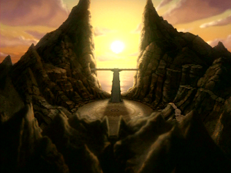
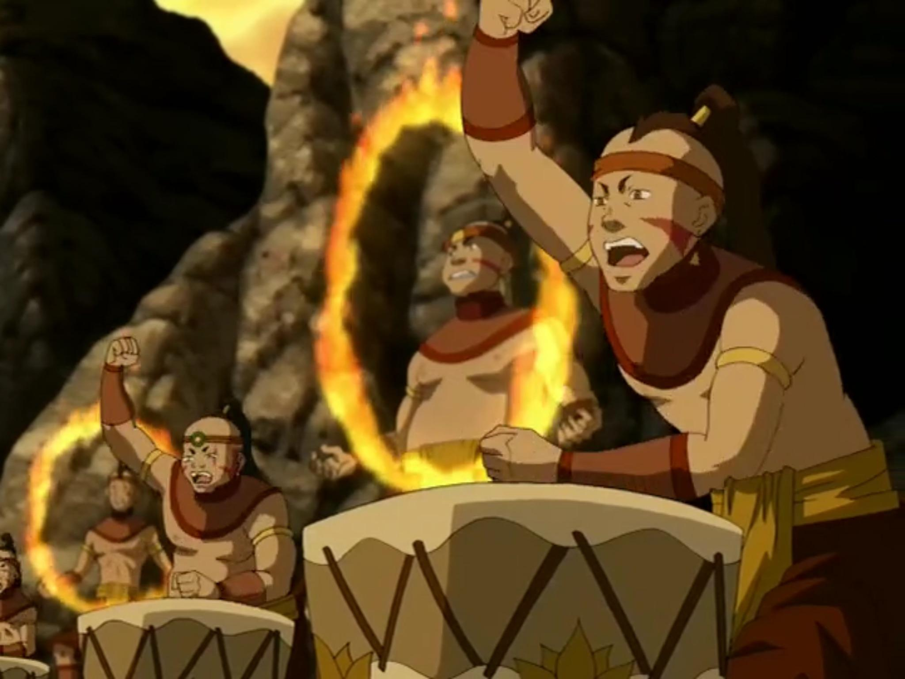
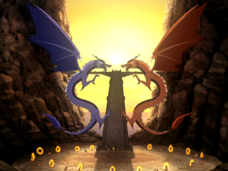

After careful consideration, you decided to go to the ancient Sun Warrior ruins. You hoped that something at the Sun Warrior ruins could help restore your bending to its full strength. Later that night, you took your dragon and flew to the Sun Warrior ruins. Once you arrived, it was just as you expected. Abandoned. Vines had overgrown the stone walls and structures and there was no person in site. It seemed like it was safe enough though, so you decided to take a look around. After exploring for about an hour, you saw a large light source in the distance. Being curious, you and your dragon walked towards it. As you got closer you noticed that it was a large flame buring on the top of a building with a staircase leading to it, so naturally, you climbed the stairs to get a closer look. But before you could make it to the top, you took a step on one of the stairs, triggering a trap. Suddenly, five people jumped down infront of you and your dragon and another five jumped down behind you. Your dragon reacted quickly but one of the people who dropped down did a couple of quick jabs to your dragon, knocking it unconscious. By instinct, you tried to produce fire to fight back, but you could hardly form a small flame. Just as you decided to fist fight your way through, the people in front of you stood at attention and parted to reveal a large man in a headdress. You realized that he and the people surrounding you looked exactly like the Sun Warriors. The man asked who you are and why you were trespassing, to which you explained your whole situation. The man, skeptical, decided to lead you up the stairs. Once you reached the top he told you, "If you wish to learn the truth of firebending and regain your bending ability, you must carry a flame from the Eternal Fire to the masters, Ran and Shaw. They will judge your heart and see if you are truly worthy." Questions swarmed in your mind, but you decided to just listen to the man. He gave you a bit a fire from the Eternal Flame, and you began you long walk to a mountain range in the distance where the masters were supposed to be.
|  |  |
It was a greuling journey but you finally made it to the mountain to see that all the Sun Warriors were already there waiting for you. A large staircase stood infront of you which lead to a platform inbetween two mountains. The stairs lead to where the masters would meet you, so you climbed them to the top. Once at the top, you stood carrying your flame. The man in the headdress announced that you were to present you fire to the masters. You stretched out the flame and waited. Suddenly, you felt an enormous rumbling that make you quake with fear. As quick as lightning, two dragons flew out of the caves in the mountains straight towards you. One dragon was red and the other was blue. They flew around and around you but you had no idea what to do. Until, you remembered a carving of something you saw when you first arrived at the ruins. It was called the Dancing Dragon, and you couldn't remember much of it, but you thought you might give it a try. You performed each form of the dance and once you finished it, the dragons came to a hault. They stared at you, as if they were deciding whether or not you would live or die. Before you knew if, the dragons engulfed you in flames. The flames spiraled around you in a fantastic display of different colors. Blue, red, orange, green, and purple fire surrounded you in a column but didn;t touch you. The display was miraculous and you were in awe. And finally you understood. Fire is not just a source of power and destruction fueled by rage and hate. It is life and energy, much like the sun the brings life to all living things. Once the column of fire dissipated, the dragons returned to their caves and you walked back down to the Sun Warriors. You tested you fire bending and it was back to it's original strength. The Sun Warriors revealed you dragon to you, now awake happily being pet and fed by other Warriors. They told you that know you know the original practice and ideology behind firebending, you must never reveal the secrecy of the living Sun Warrior civilization to anyone every again, otherwise you risk you frie bending being gone for good. Grateful to the Sun Warriors, you thanked them, and promised to never reveal them to anyone. And with that, you and your dragon returned to the city, stronger and more enlightened than ever before.
